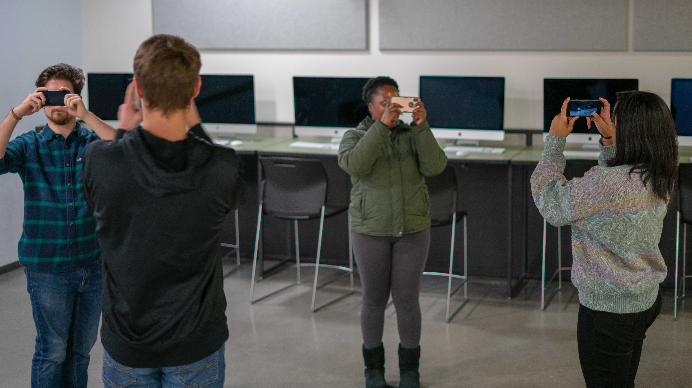

Finals Fight is an AR game created to be played in the halls off our building at MSU. The game was meant to be similar to luigi's mansion, in that
you go around vacuuming up ghosts. I was asked by one of my professors at MSU to help with the project and take over some of the programming tasks, I first began
looking into other prebuilt AR solutions. While looking into some of the prebuilt solutions such as ArCore and AR kit we found that the amount of dev time required
to make those work would be far greater than our home brew solution. The other prebuilt solutions also had various downfalls, ARkit is only on IOS and ARcore wasn’t great in the dark.
After deciding to use our homebrew AR solution I was tasked with figuring out networking for a vast majority of the game. This was a large challenge for me as it was my first ever attempt
at doing any networking. With only a few days out to launch of the game my professor and I began glueing things together and incorporating the features developed by the other programmers,
in the process we began to realize that the task of networking the project would be a rather large one. Due to the other remaining task we decided to put a hold on the networked experience and instead focus on the single player experience.

The launch of the game was overall a small success. While we had people playing it everyday, it was less of a turnout than we had hoped for, however we also had that expectation as we were running the game during finals week.
Overall though I think I learned an immense throughout the process of helping with the game, and those who did play had a great time with it. I would however like some more time to really go back and try to get more done in terms
of networking with the project.

back